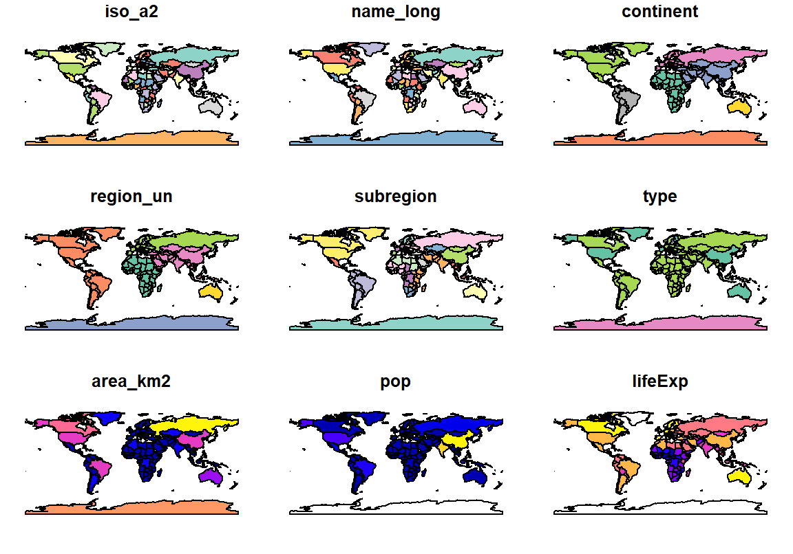
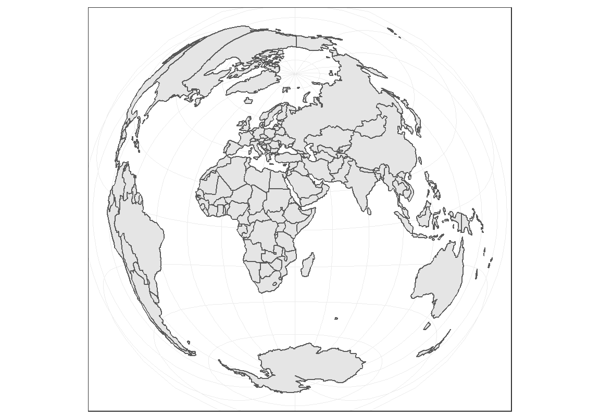

Capítulo 8 Estadística Espacial
En este capítulo exploraremos herramientas estadísticas y de visualización para análisis de superficie. Nos centraremos en la capacidad gráfica de diversos paquetes de R.
8.1 Paquetes Geo-R
Históricamente, el análisis de datos geográficos se centró en el paquete sp, que ha sido el más utilizado para manejar datos espaciales.
La funcionalidad gráfica generalmente vino acoplada al mismo sp. El paquete sp guarda información espacial como vértices de polígonos, sistemas de coordenadas y otros atributos en objetos de la clase Spatial. Aunque la funcionalidad gráfica del paquete sp usando plot() es limitada, desarrollos recientes de paquetes como tmap, ggplot2, ggmap y leaflet permiten una amplia variedad de visualizaciones estáticas e interactivas, que pueden ser incorporadas a documentos .html como la versión electrónica de este libro. El paquete sf es un desarrollo relativamente reciente construido a partir de sp.
8.2 Instalar paquetes GEO-R
Vamos a instalar los paquetes que necesitamos para trabajar con data de tipo espacial.
install.packages("sf")
# tmap se toma su tiempo, instala muchas dependencias
# usamos el repositorio de CRAN en vez del de Rstudio
install.packages("tmap", repos = "https://cloud.r-project.org")En Mac y Linux la instalación es más complicada, seguir instrucciones en: https://github.com/r-spatial/sf y en https://github.com/mtennekes/tmap
Para facilitar que podamos trabajar con datasets abiertos, podemos cargar los datasets del paquete spData.
Además, cargamos los paquetes que vamos a necesitar:
8.3 Trabajando con datos espaciales
Los datos geográficos pueden venir en base de vecotores localizados en un sistema de coordenadas de referencia. Un sitio puntual puede estar representado en longitud y latitud por un par coordenado \((x,y)\). Además, es posible encontrar datos que también posean información sobre altitud. Los puntos pueden conectarse formando polígonos (por ejemplo, los bordes de una región).
Una pequeña demostración del dataset world de sf:

También podemos utilizar subsets del dataset world:

Miremos el continente americano
# subset
americano <- world %>%
filter(region_un=="Americas") %>%
select("subregion", "lifeExp")
# Graficar
plot(americano)Figure 8.1: Gráficos de América según las subregiones y la esperanza de vida.
El mismo resultado puede obtenerse usando base R (figura omitida).
# Subset
americano <- world[world$region_un=="Americas",
c("subregion", "lifeExp")]
# Graficar
plot(americano)Veamos con un poco más de profundidad cómo está organizado el dataset. Podemos ver que cada país tiene un código iso_a2 (dos letras que identifican a cada país)14, un nombre largo o name_long y un continente (podemos chequear toda la información en el dataset con names(world)). Vemos también que tenemos una columna geom con objetos MULTIPOLYGON de clase sfc_MULTIPOLYGON, `sfc. Estos geoms constituyen los bordes de los paises.
Simple feature collection with 5 features and 3 fields
geometry type: MULTIPOLYGON
dimension: XY
bbox: xmin: -180 ymin: -18.28799 xmax: 180 ymax: 83.23324
epsg (SRID): 4326
proj4string: +proj=longlat +datum=WGS84 +no_defs
iso_a2 name_long continent geom
1 FJ Fiji Oceania MULTIPOLYGON (((180 -16.067...
2 TZ Tanzania Africa MULTIPOLYGON (((33.90371 -0...
3 EH Western Sahara Africa MULTIPOLYGON (((-8.66559 27...
4 CA Canada North America MULTIPOLYGON (((-122.84 49,...
5 US United States North America MULTIPOLYGON (((-122.84 49,...8.4 Topología geoespacial
Las relaciones de topología espacial hacen referencia a cómo se encuentran en el espacio distintos elementos geográficos. Por ejemplo, podemos pensar en la intersección entre dos regiones en el espacio o en la intersección entre una región del espacio y un set de coordenadas. En efecto, muchas veces nuestro interés está en entender las relaciones topológicas entre un set de coordenadas espaciales y un set de polígonos15. Existen funciones muy útiles en el paquete sf que nos permiten resolver con facilidad estas cuestiones.
8.4.1 Dataset xy
Creemos un dataset xy donde tenemos guardadas coordenadas como puntos en el espacio \((x,y)\). En la figura 8.2 tenemos un set de puntos (que bien podrían representar un río).
Figure 8.2: Set de datos espaciales arbitrarios
Agreguemos polígonos a este set para explorar relaciones topológicas. Para definir polígonos con la función st_polygon() debemos tener en cuenta que:
- Los polígonos deben ser cerrados. Si la primera coordenada de un triángulo es \(p_1 = (1,1)\) debemos proporcionar 4 coordenadas, siendo la última \(p_4 = p_1 = (1,1)\).
- Los puntos dentro de los polígonos se conectan según el orden especificado en la llamada a
st_polygon()
La Figura 8.3 muestra dos rectángulos definidos por los mismos 5 puntos. Podemos apreciar el efecto cómo el orden con el que especificamos los puntos cambia el resultado final.
# Creemos un rectángulo
r1 <- st_polygon(list(rbind(c(5, -5), c(5, 10),
c(10, 10), c(10, -5),
c(5, -5))))
# Lo pasamos a sf
r1 <- st_sfc(r1)
# Queríamos crear un rectángulo pero...
r2 <- st_polygon(list(rbind(c(15, -5), c(15, 10),
c(20, -5), c(20, 10),
c(15, -5))))
# Lo pasamos a sf
r2 <- st_sfc(r2)
plot(r1, xlim=c(2.5, 22.5))
plot(r2, add=TRUE, col="gray90")Figure 8.3: Construyendo polígonos con st_polygon.
Incorporemos nuestro set de coordenadas para mostrar el problema que pretendemos resolver. La Figura 8.4 muestra el problema.
Figure 8.4: Coordenadas y polígonos
Este ejemplo es relativamente sencillo y podemos resolverlo sin las herramientas espaciales proporcionadas por sf. Sin embargo, utilizar funciones espaciales es altamente recomendado para operaciones dentro de sistemas de referencia y un mayor volumen de datos. Utilizaremos este ejemplo para demostrarlo.
# Incorporamos las coordenadas a una matriz
# Transformamos esa matriz a MULTIPOINT
coordenadas <- st_multipoint(matrix(c(x,y), ncol = 2))
# Transformamos a puntos simples, o "POINT"
coordenadas <- st_cast(st_sfc(coordenadas), "POINT")Nos interesa saber cuáles son los puntos contenidos dentro de cada polígono. Por ejemplo, para r1 tenemos:
# sparse=FALSE nos dará un vector columna
inter_r1 <- st_intersects(coordenadas, r1, sparse = FALSE)El resultado de esta función y del resto que utilizaremos en esta sección con sparse=FALSE es un vector lógico que podemos utilizar para hacer subset de nuestras coordenadas originales. Si hubieramos conservado el default sparse=TRUE sólo los resultados positivos de la operación se hubieran conservado. Recuerda que trabajar con bases de datos grandes (características de datos espaciales) implica requerimientos importantes de memoria. Por eso, las funciones de sf tienden a optimizar recursos. Podemos visualizar gráficamente los puntos de interes con el siguiente llamado:
plot(x, y, pch=19)
plot(r1, add=TRUE)
plot(r2, add=TRUE)
points(x[inter_r1], y[inter_r1], pch=19, col="red")Figure 8.5: Puntos xy que intersectan con r1.
Debemos notar que st_intersects() nos da tanto puntos dentro como aquellos sobre el borde. Estrictamente, podríamos usar st_within() para ver aquellos que están dentro del polígono en cuestión.
dentro_r1 <- st_within(coordenadas, r1, sparse = FALSE)
plot(x,y, pch=19)
plot(r1, add=TRUE)
plot(r2, add=TRUE)
points(x[inter_r1], y[inter_r1], pch=19, col=alpha("red", 0.8))
points(x[dentro_r1], y[dentro_r1], pch=19, col=alpha("blue", 0.5))Figure 8.6: Puntos dentro de r1 (azul) y puntos que intersectan (rojo) con r1. Puntos violáceos pertenecen a ambos conjuntos.
Podemos verificar cuál es el punto sobre el borde utilizando la función st_touches().
x y
1 5 -4.794621Las herramientas detalladas en esta sección pueden aplicarse a objetos espaciales en general y son útiles para categorizar datos según sus relaciones de topología.
Ejercicio: Replicar con r2 el ejemplo explicado con el rectángulo r1.
Ejercicio: Elegir 10 coordenadas de latitud y longitud y encontrar a qué países pertenecen.
8.5 Nueva Zelanda
En esta sección vamos a explorar el dataset nz como caso de estudio para demostrar la capacidad gráfica que adquirimos al trabajar en R con datos espaciales.
8.5.1 R-Geo con Base
Como es costumbre, la excelente función plot() es compatible con muchos tipos de objetos y entiende como manejar objetos de tipo sf. Con esta función, podemos realizar gráficos de buena calidad con relativamente poco esfuerzo.
# Fondo celeste
par(bg = 'lightblue')
# Si queremos hacer 2 gráficos
# par(mfrow=c(1,2))
# Grafico de la isla
plot(nz[1], col="gray80", main="Nueva Zelanda")
plot(nz[2], main="Nueva Zelanda", key.pos = 1)

8.5.2 R-Geo con tmap
La funcionalidad de base es limitada. Exploremos el paquete tmap que tiene una funcionalidad muy pareceida a ggplot2, con capas y gramática.
# Mapa con bordes
bordes <- tm_shape(nz) +
tm_borders()
# Agregamos fill de un solo color
con_color <- bordes + tm_fill(col="red", alpha=0.3)
# Agregamos fill segun el area de la region
# Cuidado! no usamos aes(col= Land_area) cual ggplot2
area_region <- tm_shape(nz) +
tm_borders() +
tm_fill(col = "Land_area")
# mostramos los mapas juntos
tmap_arrange(bordes, con_color, area_region)
Ejercicio: Investigar las opciones breaks y palette en tm_fill()
8.5.3 Cambiando colores con style
El ejercicio anterior apunta a modificar a mano los valores de breaks. El paquete tm puede asignar los valores de corte de manera automática según un estilo o style (ver ?tm_polygons()):
Los estilos se modifican mediante tm_fill(…, style=…)
style = pretty(default), redondea a números enteros y los separa equidistantes.style = equaldivide los valores de entrada en cortes de igual rango. Este tipo de estilo provoca que los mapas tengan poca variadad de color si tenemos una distribución asimétrica en la variable que elegimos para colorear.style = quantiledivide en cuantiles nuestras observaciones de modo que el mismo número de observaciones entra en cada corte.style = jenksidentifica grupos con valores similares y maximiza las diferencias entre grupos.style = contnos proporciona un numero continuo de colores en un rango cromático. Podemos utilizarlo cuando queremos representar gradientes de terreno (gráficos tipo raster).style = catnos sirve para representar variables categóricas de modo que cada categoría será coloreada con un color único.
A continuación se muestran ejemplos de los distintos estilos:
Figure 8.7: Distintas combinaciones de style
Aunque menos flexible, si se acomoda a nuestras expectativas, podemos cambiar el estilo de manera global con tm_style():

Existen múltiples estilos que cambian de manera global los mapas que podemos hacer (ver ?tm_style()). También podemos crear gráficos de calidad profesional.
Ejercicio: Inspeccionar el siguiente código y comentar en cada línea su función.
titulo_leyenda = expression("Área (km"^2*")")
tm_shape(nz) +
tm_borders() +
tm_fill(col = "Land_area", title = titulo_leyenda) +
tm_compass(type = "4star", position = c("left", "top")) +
tm_scale_bar(breaks = c(0, 125, 250), size = 1,
position = c("right", "bottom"))+
tm_layout(frame.lwd = 5, legend.outside = TRUE,
legend.outside.position = c("right", "bottom"),
legend.bg.color = NA,
legend.format = list(text.separator = "-"))
Figure 8.8: Mapa de Nueva Zelanda. Coloreado según área.
8.6 Proyecciones
Para transformar el mundo de esfera a plano, utilizamos ciertas transformaciones matemáticas o proyecciones. A continuación muestro algunas proyecciones conocidas, utilizando datos de GDP per cápita16.

Figure 8.9: GDP per cápita. Distintas proyecciones. Con pequeñas modificaciones al español. Fuente: https://github.com/mtennekes/tmap/tree/master/demo/WorldFacets
La base para construir distintas proyecciones es cambiar el argumento projection en el comienzo del llamado.
# longitud-latitud
tm_shape(World, projection = "longlat") + ...
# robinson
tm_shape(World, projection = "robin") + ...
# eck4
tm_shape(World, projection = "eck4") + ...Para ver el código completo para generar la Figura 8.9 dirigirse al Anexo A. Podemos investigar otras transformaciones con ggplot2. Para hacerlo, podemos utilizar la función st_transform() presente en sf y la siguiente transformación:
"+proj=laea +y_0=0 +lon_0=40 +lat_0=10 +ellps=WGS84 +no_defs"
# Transformar el objeto sf World
world2 <- sf::st_transform(
World,
"+proj=laea +y_0=0 +lon_0=40 +lat_0=10 +ellps=WGS84 +no_defs"
)
# Graficar el nuevo objeto
ggplot() + geom_sf(data = world2) +
theme_bw()
Ejercicio: Explorar cómo cambian los mapas al cambiar los valores de lon y lat en la proyección del código anterior
8.7 Mapas con facets
Podemos hacer un gráfico de facets con tm_facets(). Sin embargo, tm_facets() será explorada en la sección 8.9. Luego, en esta sección me voy a centrar en ggplot2 para mostrar algo de variedad en la forma de crear y presentar mapas con datos provenientes de distintas fuentes. Utilizaremos los datos provenientes del paquete gapminder. Aprovecho para mencionar que la base de datos de gapminder no tiene el código iso. Debemos obtenerlos del objeto country_codes.
library(gapminder)
# obtenemos iso
# Juntamos con gapminder
gapminder <- gapminder %>% left_join(country_codes) %>%
rename(iso_a3 = iso_alpha,
name = country)
# Unir los datos con los bordes y filtrar algunos años
# forzamos el join por iso_a3
# Por ejmplo, en un dataset EE.UU., aparece como "United States"
# y en el otro como "United States of America".
data_del_mundo <- World %>% left_join(gapminder, by="iso_a3") %>%
filter(year %in% seq(1977, 2007, 10))Ahora estamos listos para graficar los datos de población en función del tiempo. Usando ggplot2, podemos aprovechar el funcionamiento de facet_wrap(), por lo que utilizaremos facet_wrap(~year).
Figure 8.10: Gráfico de población en el tiempo.
Este mapa tiene algo extraño. Ocurre que el dataset gapminder no contiene información para todos los países (Puedes corroborarlo corriendo filter(gapminder, name=="Russia")). Un recurso es graficar los bordes de dichos países sin fill. Para ello, utilizamos dos llamados a geom_sf().
ggplot() +
geom_sf(data=World)+
geom_sf(data=data_del_mundo, aes(fill=pop))+
facet_wrap(~year)+
theme_bw()+
# agregamos viridis para mejor contraste
viridis::scale_fill_viridis() +
theme(axis.text.x = element_text(angle = 45, hjust = 1)) Figure 8.11: Gráfico de población en el tiempo. Incluye países faltantes.
8.8 Mapas animados
Una mejor forma de graficar el mismo set de datos es animarlo. En el siguiente código usamos un llamado a tm_shape() para que los países faltantes sean graficados desde World, mientras que nuestros datos de población sean graficados desde data_del_mundo via qtm (un abreviado de tm_shape()+ tm_fill()). El orden de los llamados determina qué capa va arriba, del mismo modo que ocurre en ggplot2. Vamos a utilizar tm_facets(), que nos brinda la opción de producir múltiples gráficos según una columa de nuestro dataset de entrada. En particular tm_facets() puede ser llamada con el argumento by=... si queremos viñetas o along=...si queremos un objeto animado17.
# Creamos la animación como objeto
world_anim <- tm_shape(World) +
tm_borders()+
qtm(data_del_mundo, "pop", fill.palette="viridis") +
tm_facets(along = "year", drop.units = TRUE)+
tm_legend(show=FALSE)Para mostrar el objeto, debemos guardarlo como .gif y asignar la velocidad (delay) con la que queremos que cambien los cuadros. Abajo reproduzco el código para generar el gráfico de la figura

Figure 8.12: Gráfico animado creado utilizando tmap. Cambio en población sobre tiempo. Los cambios en China y India eclipsan a otros países en escala.
8.9 Mapas interactivos
En el mundo de hoy día, muchos dispositivos tienen acceso a información en archivos de tipo .html (cualquier dispositivo que tenga un navegador de internet). Esto hace que distintas aplicaciones se beneficien de insertar contenido .html en productos multimedia (ver Capítulo 9). En esta sección, exploramos cómo crear mapas interactivos, que permiten al usuario navegar por el mapa que hemos creado e interactuar con la información que presentamos.
El paquete tmap permite hacer gráficos interactivos con mucha facilidad. De hecho, no es necesario cambiar el código con el que creamos el mapa. Sólo debemos cambiar el modo de representación (de estático a dinámico, usando tmap_mode("view")). Por ejemplo, este es uno de los mapas de la figura 8.7.
Podemos combinar los gráficos interactivos con facets en tmap con tmap_facets() o tmap_arrange(). Los gráficos se moverán en sintonía utilizando sync=TRUE. Por ejemplo:
Las escalas de gráficos sincronizados como el anterior no deben estar necesariamente sincronizadas. Podemos sincronizar gráficos totalmente distintos:
Al cambiar de modo, todos los gráficos que hagamos (o hayamos hecho) con tmap se mostrarán de modo interactivo. Si deseamos volver a contenido estático, debemos cambiarlo de nuevo.
tmap mode set to plottingDetrás del telón de estos gráficos interactivos se esconde el paquete leaflet (y los datos provinientes de OpenStreetMap). El paquete leaflet en R permite insertar mapas interactivos en archivos .html. Como siempre, debemos instalar el paquete si es la primera vez que lo vamos a utilizar.
leaflet utiliza el sistema de pipes (%>%) para construir los gráficos a partir de la llamada la función leaflet(). A continuación se reproduce el ejemplo básico, puede ser encontrado en la página del paquete (ver aquí).
m <- leaflet() %>%
# Agregamos el mapa OpenStreetMap default
addTiles() %>%
addMarkers(lng=174.768, lat=-36.852,
popup="Lugar de nacimiento de R")
# Incorporar el mapa
m Figure 8.13: Lugar en donde se creó R.
8.10 Resumen
- R posee paquetes que permiten trabajar con datos espaciales (de tipo
sposf) y realizar gráficos con calidad de publicación. - Podemos realizar gráficos animados e interactivos.
- El paquete
tmapposee funcionalidad parecida aggplot2y cubre una gran cantidad de aplicaciones. - El paquete
leafletpermite hacer gráficos interactivos de alto contenido.
8.11 Recursos
- Este capítulo construye a partir del libro Geocomputation with R. Intenté ignorar detalles técnicos que considero que son cruciales para usuarios avanzados, pero que escapan a las intenciones de este libro introductorio.
- La viñeta de
tmapaquí y aquí - Más información sobre manejo de datos espaciales en R aquí
- Información sobre modificar la leyenda en
tmap(http://www.jla-data.net/2017/09/20/2017-09-19-tmap-legend/) - Información sobre proyecciones con
ggplot2 - El paquete
leaflet
8.12 Respuestas
Podemos cambiar la escala con la que se grafica utilizando breaks y podemos cambiar el tipo de colores utilizando el argumento palette. Por ejemplo:
# Original
area_region <- tm_shape(nz) +
tm_borders() +
tm_fill(col = "Land_area")
# Modifico breaks para mayor detalle
cortes <- seq(0, 50000, 5000)
area_2 <- tm_shape(nz) +
tm_borders() +
tm_fill(col = "Land_area", breaks = cortes)
# modifico la paleta de colores
# probar tmaptools::palette_explorer()
area_3 <- tm_shape(nz) +
tm_borders() +
tm_fill(col = "Land_area",
breaks = cortes,
palette = "viridis")
# mostramos los mapas juntos
tmap_arrange(area_region, area_2, area_3)Figure 8.14: Ejemplos sobre combinaciones de breaks y distintos tipos de fill en gráficos con tmap
Anexo A
La figura 8.7 fue construida con el siguiente código:
# Poblacion
nz_pretty <- tm_shape(nz) +
tm_borders() +
tm_fill(col = "Population", title = "Población", style="pretty")+
tm_legend(legend.position = c("left", "top"),
main.title.position = "right",
legend.format = list(text.separator = "-"),
legend.bg.color = NA)+
tm_credits("pretty", size = 1.5)
nz_equal <- tm_shape(nz) +
tm_borders() +
tm_fill(col = "Population", title = "Población", style="equal")+
tm_legend(legend.position = c("left", "top"),
main.title.position = "right",
legend.format = list(text.separator = "-"),
legend.bg.color = NA)+
tm_credits("equal", size = 1.5)
nz_quantile <- tm_shape(nz) +
tm_borders() +
tm_fill(col = "Population", title = "Población", style="quantile")+
tm_legend(legend.position = c("left", "top"),
main.title.position = "right",
legend.format = list(text.separator = "-"),
legend.bg.color = NA)+
tm_credits("quantile", size = 1.5)
nz_jenks <- tm_shape(nz) +
tm_borders() +
tm_fill(col = "Population", title = "Población", style="jenks")+
tm_legend(legend.position = c("left", "top"),
main.title.position = "right",
legend.format = list(text.separator = "-"),
legend.bg.color = NA)+
tm_credits("jenks", size = 1.5)
nz_cont <- tm_shape(nz)+
tm_borders()+
tm_fill(col="Population", title="Población", style="cont")+
tm_legend(legend.position = c("left", "top"),
main.title.position = "right",
legend.format = list(text.separator = "-"),
legend.bg.color = NA)+
tm_credits("cont", size = 1.5)
nz$categ <- c("Cat. A", "Cat. B")
nz_cat <- tm_shape(nz)+
tm_borders()+
tm_fill(col="categ", title="Categoría", style="cat")+
tm_legend(legend.position = c("left", "top"),
main.title.position = "right",
legend.format = list(text.separator = "-"),
legend.bg.color = NA)+
tm_credits("cat", size = 1.5)
tmap_arrange(nz_pretty, nz_equal, nz_quantile,
nz_jenks, nz_cont, nz_cat)La figura 8.9 fue construida con el siguiente código:
data("World")
longlat <- tm_shape(World, projection = "longlat") +
tm_polygons("gdp_cap_est",
palette = "Purples",
style = "fixed",
n = 7,
breaks = c(0, 500, 2000, 5000, 10000, 25000, 50000, 1000000),
title = c("GDP per cápita"),
legend.format = list(text.separator = "-"),
textNA = "Sin Datos") +
tm_style("natural", earth.boundary = c(-180, -87, 180, 87)) +
tm_format("World", inner.margins = 0.02, frame = FALSE) +
tm_legend(position = c("left", "bottom"),
bg.color = "gray95", frame = TRUE)+
tm_credits(c("coordenadas longitud-latitud"), position = c("RIGHT"))
robin <- tm_shape(World, projection = "robin") +
tm_polygons("gdp_cap_est",
palette = "Purples",
style = "fixed",
n = 7,
breaks = c(0, 500, 2000, 5000, 10000, 25000, 50000, 1000000),
title = c("GDP per cápita"),
legend.format = list(text.separator = "-"),
textNA = "Sin Datos") +
tm_style("natural", earth.boundary = c(-180, -87, 180, 87)) +
tm_format("World", inner.margins = 0.02, frame = FALSE) +
tm_legend(position = c("left", "bottom"),
bg.color = "gray95", frame = TRUE)+
tm_credits(c("Robinson (1963)"), position = c("RIGHT"))
eck4 <- tm_shape(World, projection = "eck4") +
tm_polygons("gdp_cap_est",
palette = "Purples",
style = "fixed",
n = 7,
breaks = c(0, 500, 2000, 5000, 10000, 25000, 50000, 1000000),
title = c("GDP per cápita"),
legend.format = list(text.separator = "-"),
textNA = "Sin Datos") +
tm_style("natural", earth.boundary = c(-180, -87, 180, 87)) +
tm_format("World", inner.margins = 0.02, frame = FALSE) +
tm_legend(position = c("left", "bottom"),
bg.color = "gray95", frame = TRUE)+
tm_credits(c("Eckert IV (1906)"), position = c("RIGHT"))
# todo junto
tmap_arrange(longlat, robin, eck4, nrow = 3)Anexo B
Recomiendo leer con precaución toda la información antes de instalar el software ImageMagick para no cometer errores durante la instalación. Por ejemplo, asegurarse de instalar convert durante la instalación. Otra alternativa es intentando desde la consola de R con el siguiente código:
Puede ocurrir que R no encuentre el PATH donde está ImageMagick. En mi caso es C:/Program Files/ImageMagick-7.0.8-Q16. Por ende uso este llamado para explicitamente incorporarlo.
Trabajar con paises es particularmente complicado. Las mejores bases de datos poseen códigos internacionales de 2 o 3 letras pero es muy común encontrar problemas con los nombres cortos (o largos) de los distintos países. Además, los datos longitudinales agregan problemas cuando la composición geopolítica cambia (por ejmplo, es común encontrar datos en donde aún tenemos USSR como un país).↩
Nuestra pregunta de puede resumirse contestando “¿Cuál punto está dentro de cada polígono?”.↩
Para ver las distintas proyecciones disponibles recomiendo seguir el archivo de ayuda de la función de
tmaptoolsque maneja proyecciones (?get_proj4). También Wikipedia↩Para realizar animaciones
tmapusa ImageMagick, un software libre que permite render de imágenes. En Windows, la instalación no es trivial. Más información aquí. En el Anexo B detallo cierta información que puede ser de uso en Windows.↩